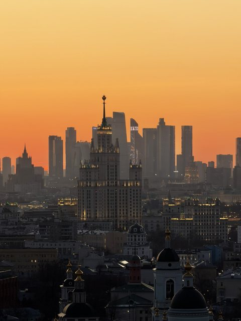
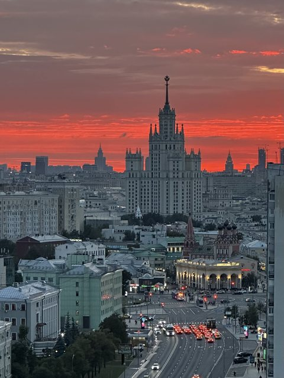
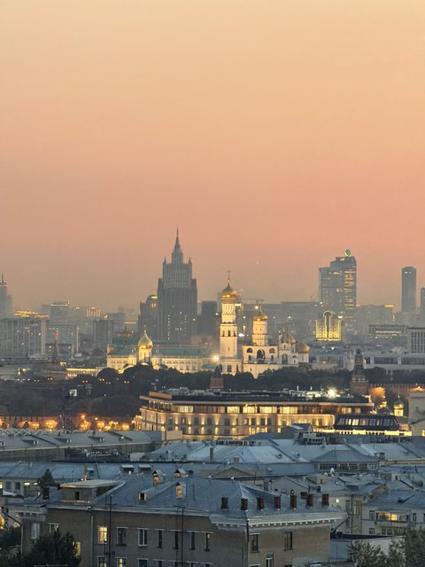

Фото и контент
Фотосессия на крыше в Москве
Это прогулка по крыше с сопровождением: час наверху, от 2000 ₽ с человека, а если захочется больше света и ракурсов — продление стоит 500 ₽ с человека за час. Снимать можно на телефон или прийти со своим фотографом: локация уже готова — небо, силуэты высоток и городская глубина.
Для каких съемок подходит крыша
Rooftop-локация хорошо смотрится в кадре без лишних декораций: за спиной город, небо, линии крыш и вечерний свет. Это подходит и для короткой личной съемки, и для контента в Instagram или TikTok.
Идеи для съемки
- портреты на фоне города;
- лавстори или свидание с фотографом;
- контент для личного бренда;
- короткие вертикальные видео на закате.
Как подготовиться
Лучше выбрать удобную обувь, одежду без лишней суеты и заранее подумать о цветах: черный, белый, серый, деним и теплые оттенки обычно хорошо работают на фоне заката.
Наши кадры
Как выглядят кадры с крыш
Реальные фотографии с крыш из каталога — без обработки под рекламу: такой свет и такие виды ждут на съемке.






Локации
Где снимаем
Пять крыш из каталога, которые чаще всего выбирают для съемки. Точное место встречи сообщаем после подтверждения записи.
FAQ
Про съемку
Фотограф входит в стоимость?
Сейчас можно прийти со своим фотографом или снимать самостоятельно. Актуальные условия уточняйте в боте.
Можно ли снимать видео?
Да, формат подходит для коротких видео и контента в Instagram/TikTok.
Когда лучше снимать?
Самое атмосферное время — ближе к закату, если оно доступно в расписании.
Кадры над Москвой